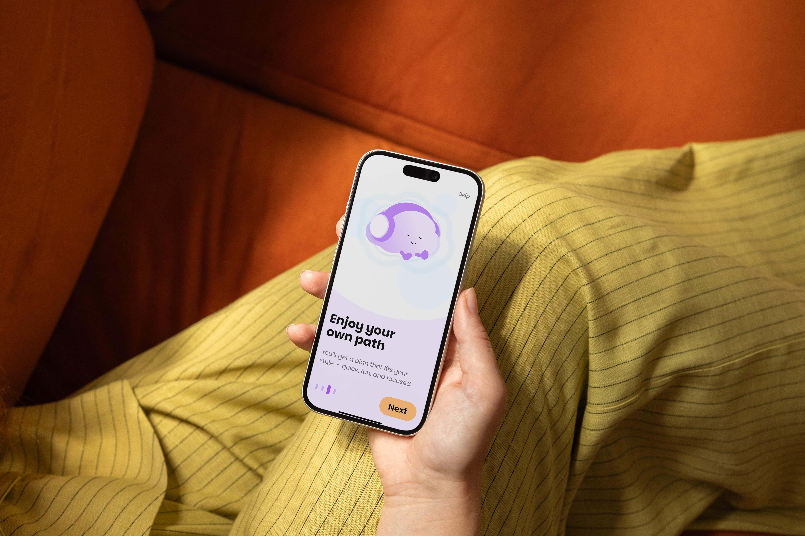
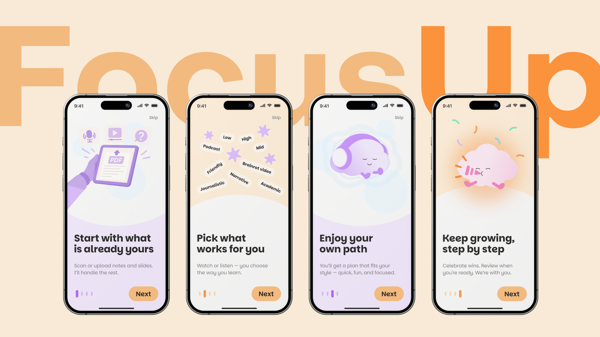
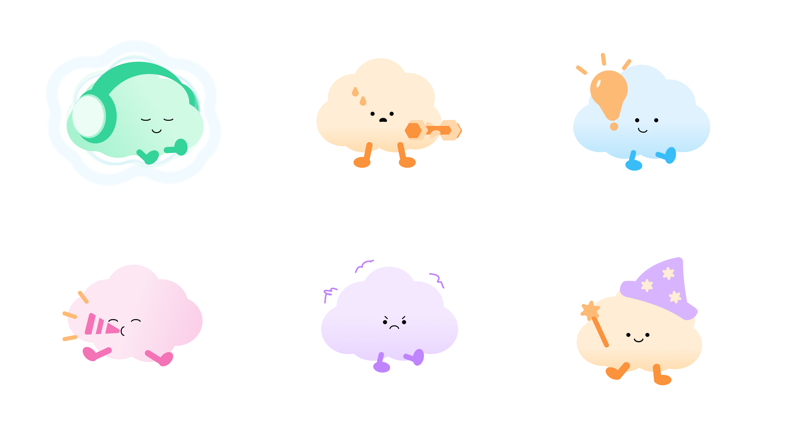

focusup
Mobile application designed to help university students with ADHD build a motivating study routine.

project overview
FocusUp is an AI-powered study companion designed for university students with ADHD, transforming static study material into dynamic, multisensory formats that work with the ADHD brain rather than against it.
team
F. Alessandrini, M. Frattin, F. Luo, L.M. Mihalcea
my role
UX/UI Design, Service Design
context
Envisioning AI through Design, Politecnico di Milano

problem statement
How might we help ADHD university students exploit dynamic and interactive stimuli while studying static material? Students with ADHD face significant barriers in traditional academic environments: cognitive overload from static content, institutional invisibility, and a lack of tools designed for their cognitive profile. Research combined semi-structured interviews with diagnosed students, a survey, and a consultation with a psychologist.
Turn on your focus, overcome every challenge.
user personas
The research and user journey were grounded in semi-structured interviews with diagnosed university students.
Italian Student
Lacks formal institutional support as ADHD is not recognized as a Special Educational Need by his university. Relies on self-devised strategies like background noise and split-screen TikToks while studying.
Chinese Student
Diagnosed late, stopped medication due to severe side effects. Relies on spontaneous, low-effort strategies to combat reading fatigue, procrastination, and time-management issues.
key insights
Monotony is the enemy: ADHD brains concentrate better in stimulus-rich environments and actively seek new sensory stimuli when static content under-stimulates them. Microlearning and multisensory strategy: breaking study material into short blocks minimizes cognitive overload. Pairing auditory inputs with visual stimulation anchors attention and improves retention.

digital interface
FocusUp uses Gemini 2.5 for content summarization and ElevenLabs for text-to-speech generation. A Reinforcement Learning algorithm monitors user engagement in real time, suggesting mental breaks when cognitive fatigue is detected. The interface features a warm orange palette, the rounded Parkinsans typeface, and a gender-neutral cloud mascot. Light gamification (XP, badges, levels) provides motivation without performance pressure.

outcomes
Usability testing with ADHD students confirmed the interface is smooth and effective. AI-generated brainrot videos and podcasts were praised for making studying enjoyable. Feedback led to added subtitles, clearer swipe cues, and softer complexity labels.
Each user was guided through a standardized test protocol comparing three core tasks: